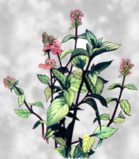
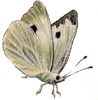
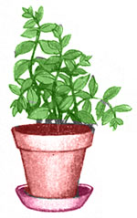

Lately, more and more people hove begun to understand just how ' limited-in both variety and nutritional valueour "modern" diets hove become. This realization has sparked o new and widespread interest in the culinory and therapeutic uses of herbs . . . those plants which-although not wellknown today-were, just one short generation ago, honored "guests" on the dinner tables and in the medicine chests of our grandparents' homes. In this regular feature, MOTHER examines the availability, cultivation, and benefits of our "forgotten" vege table foods and rem edies . . . and-we hope-helps pre vent the loss of still another bit of an cestral lore.
According to ancient Greek legend, Pluto-the god who reigned over the underworld-became enraptured by a nymph named Menthe . . . causing his wife, Proserpina, to turn the young beauty into an herb and banish her forever to regions of shadows and moisture. And-like most such tales-the myth still has relevance today: This perennial, peppermint ( Mentha piperita ), is often found growing wild in wet, shaded spots . . . but it will also thrive in your own garden or window box.
The herb is distinguished by a square, reddish, bitter stem. Red overtones are also visible in the leaves (which are darker green, larger, less crinkly, and more potent than those of spearmint), and the two- to three-foot spreading branches curve outward instead of growing straight up. Attractive rose-lavender flowers appear art cylindrical spikes in late July or August . . . and produce small, round, dark seeds. These, however, don't always reproduce true to the parent plant, so it's best to cultivate the herb from cuttings (which will generally root easily when placed in water) or-in the autumn-to plant small pieces of root two inches deep and six to eight inches apart.
Peppermint will grow almost anywhere that's out of the hot sun, but it prefers a moderately rich soil and at least partial shade. Because it spreads vigorously by underground runners, you might want to cultivate yours in containers (at least four inches in depth) or-in the garden-in beds surrounded by boards buried about six to eight inches in the earth (they'll help keep the mint from taking over your growing plot). When planted as a companion to cabbage-or strewn between any vegetables of the genus Brassica-peppermint helps deter the white cabbage butterfly.
Make sure the herb receives at least an inch of water a week, and to promote bushier growth, snip off the tender budding tips. If you want to assure a lengthy harvest, you should also keep the flowers pinched back . . . but don't pick any leaves before the herb is 10 to 12 inches high, or you'll weaken the plant.
To dry peppermint, gather the foliage in the early morning before the dew has evaporated. The leaves will be at their best just prior to flowering when the level of essential oils is at its peak. Hang the bunches upside down in warm shade, or dry them in the oven at 150°F . . . then strip the leaves from the stems and store them in opaque jars with airtight lids. Clean, undried sprigs can also be frozen in plastic bags, orto prepare a decorative, flavorful addition to punch and iced teajust add leaves to the water when you refill an ice cube tray.
Either fresh or dried, peppermint leaves can add zest to salads or fruit cocktails . . . and are also delicious sprinkled over ice cream or mixed into cream cheese. A tasty marinade can be made by combining the fresh-tasting greenery with a little vinegar and water. And to make a mint sauce, start by cooking 1/2 cup of lemon juice, 1/2 cup of honey, 1/4 cup of water, and 1/8 teaspoon of salt in the top of a double boiler for five minutes. After that, add mint leaves (experiment to find the most appealing strength of mint flavor) . . . let the liquid simmer for 10 to 15 minutes . . . and serve it warm with lamb or veal.
Mint tea has long been used as a refreshing drink that's also said to relieve indigestion, alleviate motion and morning sickness, calm nerves, induce sleep, and reduce the effects of heat prostration. Many people believe that fresh stems and tops, mixed with rosemary or balm in a hot bath, can ease stiff joints and relax tired muscles. And few would dispute the claim that refrigerated "mint water" (soak a cup of peppermint leaves in a quart of water and then strain the foliage out) makes a stimulating face wash.
|
 |
 |
 |